Manual
Introduction
Plinky is an 8-voice polyphonic touch synthesiser that specialises in fragile, melancholic sounds. It supports 4 external CV modulation sources — A, B, X, Y — each with its own LFO on top. A & B also have dedicated offset knobs.
Think of Plinky as 8 vertical monophonic strings, played by touching the 64 main pads. By default each string quantizes to steps of a C major scale, and the strings are a 5th apart.
Each string has:
- Either 4 sawtooth oscillators, detuned by the tiny movements of your finger
- Or 4 sample grains drawn from 1 of 8 samples you can record into Plinky
- A white noise oscillator
- An ADSR envelope controlling a resonant 2-pole low-pass gate
- A secondary Attack-Decay envelope with repeat
Plinky also has global delay, reverb, high-pass filter and saturation units, along with a simple mixer, arpeggiator, and sequencer.
Playing
Touch the 64 main pads to play. Parameters and presets are accessed using the row of 8 shift keys (blue LEDs) along the bottom, used in conjunction with the main pads.
Parameters 1 / 2
The most important buttons. Tap to enter parameter mode (LED on), then tap a main pad to choose a parameter to edit. Edit with the leftmost column (acts as a slider) or by sliding up/down on the icon pad itself.
Tip: Hold the shift key with one hand and edit with the other.
Tap again to enter slider mode (LED flashing): leftmost column stays a slider, rest of pads are playable notes. Tap once more to return to play mode (LED off).
Preset Mode
LED on. The left 32 pads become preset selectors, the middle 24 pads are pattern selectors, and the rightmost 8 pads select/deselect a sample.
- If the sequencer is playing, changes take effect on the next loop
- Press and hold a preset/pattern pad to copy the current preset/pattern onto it
- Press and hold a sample pad to enter sample edit/record mode
- Hold X shift to initialise a preset or clear a pattern
Navigation Buttons
| Button | Action |
|---|---|
| Tap: move back a step (or reset if playing). Hold: show current loop; tap a pad to jump or set a new loop start | |
| Tap: move forward a step. Hold: show current loop; tap a pad to set loop end | |
| Clear | Cancel latched chord · suppress notes from a playing sequence · wipe preset/pattern (preset mode) · clear note data (record mode) · enter a rest (step record mode) |
| Record | Toggle record mode. Realtime when playing, step-sequencing when paused |
| Toggle time playing |
Parameters
Parameters are grouped in rows, bottom to top. Each pad has two functions — Param 1 (primary) and Param 2 (secondary).
Sampler Row
| Param 1 | Param 2 |
|---|---|
| Sample Choice — active sample, 0 for none |  Noise Level — white noise mixed with oscillator |
| Scrub — grain position offset within sample | |
| Rate — playback rate (negative = reverse) | |
| Grain Size Jitter — randomises grain size per grain | |
| Timestretch — changes rate without changing pitch | (unused) |
| Quantise Mode — pitch CV quantisation |
Arp / Sequencer Row
| Parameter | Arp | Sequencer |
|---|---|---|
| Order | Note order in arpeggio | Note order in sequencer |
| Clock divider | Clock divider | |
| Chance of note triggering | Same | |
| Euclid | Steps in euclidean rhythm | Same |
| Octave / Pattern | Arp octave spread | |
| Tempo / Step | Current step |
VCA / Mixer Row
| Param 1 | Param 2 |
|---|---|
| Sensitivity — pressure to open the low-pass gate | Input Level — audio input level |
| Attack | In → FX Level — wet level for input audio |
| Resonance |
Pitch Row
| Param 1 | Param 2 |
|---|---|
| Octave — base octave | |
| Pitch — base pitch (unquantized) | Scale — scale for pads & rotate |
| Microtone — 0 = quantized, 100 = analog | |
 Interval — fixed interval between oscillators |
Stride — interval between successive strings |
| Gate Length — staccato control for Arp & Seq | |
| Env2 Rate | Env2 Warp — ramp down (−100) / triangle (0) / ramp up (+100) |
FX Row
| Param 1 | Param 2 |
|---|---|
| Delay Time — negative = beat-synced | Reverb Time |
| Delay Wobble | Reverb Wobble |
| (unused) | |
| Env2 Repeat — 100% = repeats forever |
CV / LFO Rows
Each of the 4 CV inputs is scaled, offset, then combined with a dedicated LFO.
| Parameter | A / B | X / Y |
|---|---|---|
| Attenuverter for CV | Same | |
| Offset | Shift for CV (A/B add knob) | Same |
| LFO depth | Same | |
| Rate | LFO frequency | Same |
| Shape | LFO shape | Same |
| Warp | Symmetry of shape | Same |
Toggle / Preview Row
Arp — toggle arp on/off.
The centre 4 pads are always available to preview your patch.
Latch — latch previously held notes.
Modulation Sources
Every parameter can be modulated from a matrix of 7 sources. While in parameter mode (Shift 1/2 held), select a modulation source from the rightmost column:
| Source | Description |
|---|---|
| Parameter value before modulation | |
| Random | Variation added on each trigger. Positive = unipolar, negative = bipolar |
| Pressure | Finger pressure → parameter |
| Envelope 2 → parameter | |
| CV A + Knob A + LFO A → parameter | |
| CV B + Knob B + LFO B → parameter | |
| CV X + LFO X → parameter | |
| Y | CV Y + LFO Y → parameter |
Tip: The selected modulation source is remembered. Don't forget to return to Base Value after editing modulations for other channels.
Sample Edit / Recording Mode
Plinky lets you record and use up to 8 samples. From preset mode, long-press one of the 8 sample pads (rightmost column) to enter sample edit mode. Each sample is divided into 8 slices corresponding to the 8 columns (strings).
Recording
- Press and hold the Record button — a level-set screen appears
- Use Knob A to set the peak level (+6 dB headroom available; "CLIP!" warns of clipping)
- Press
 Play or Record to arm — recording starts on detected audio or a second tap
Play or Record to arm — recording starts on detected audio or a second tap - Tap main pads while recording to set slice points; otherwise Plinky divides into 8 equal slices
- Press Play/Record to stop
Sample Modes
Tape / Pitch mode (press Param 1 to toggle):
- Tape — Sample slices span all 64 pads; pitch is only affected by the Sample Rate parameter
- Pitched — Each slice has a reference pitch (e.g. C#3); Plinky builds a multisample keymap. Set the reference pitch by sliding in the lower half of the pad area
Loop mode (press Param 2 to cycle):
Play Slice → Loop Slice → Play All → Loop All
CV Reference
Inputs (top to bottom)
| Jack | Function |
|---|---|
| Modulation inputs combined with dedicated LFOs | |
| 1 V/Oct pitch offset (approx −1 V to +5 V) | |
| Modulates the low-pass gates (0–5 V) | |
| 1/16th note clock input | |
| Audio In | Sent to output mixer via FX; used in sampling mode |
Outputs (top to bottom)
| Jack | Function |
|---|---|
| 1/16th note clock out | |
| +6 V pulse on every new note | |
 Pitch Hi |
1 V/oct — rightmost string playing (respects Arp) |
| Analog envelope follower of the loudest string | |
 Pitch Lo |
1 V/oct — leftmost string held (ignores Arp) |
| Pressure | Analog level of heaviest finger press |
| Right | Right stereo audio out |
| Left | Left stereo audio out (mono if no right jack plugged in) |